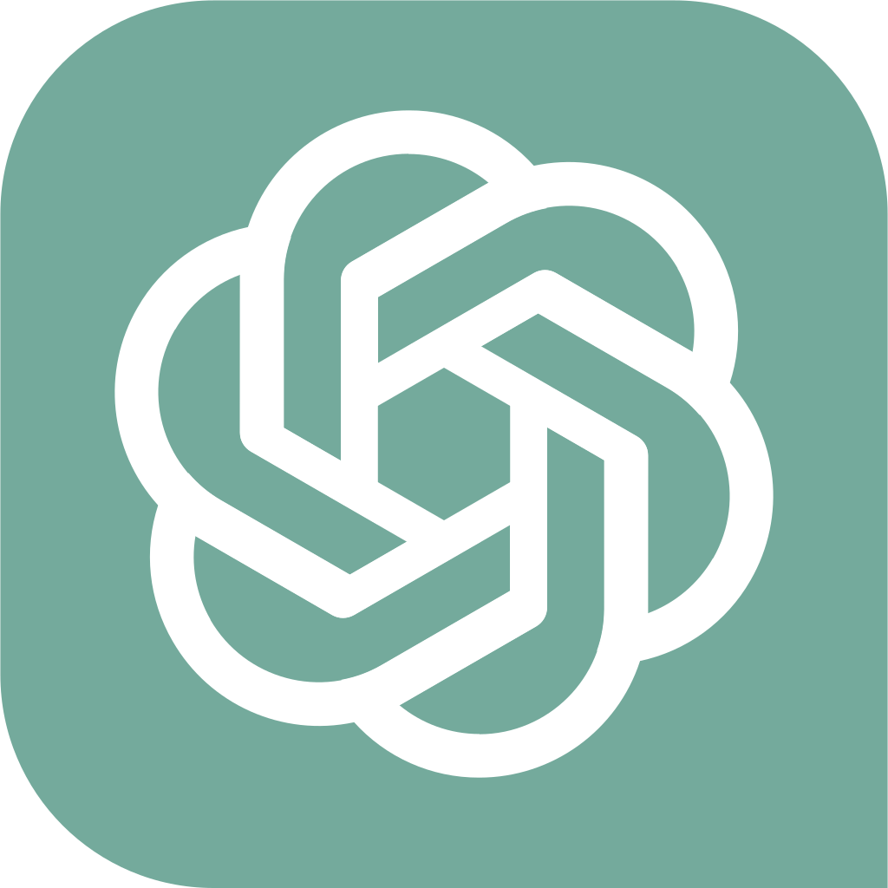

What I build
A growing collection of things I build, from AI agents and automations to Polarion extensions. Each is a step toward less manual work and more AI in Polarion.

AvailableavaCopilot
GenAI capabilities inside Polarion ALM
An AI assistant for Polarion that turns repetitive ALM work into conversational, automated workflows.
Learn more → Open Source
Open Source
Polarion MCP Server
Copilot meets your backlog
No more copy-pasting between Polarion and VS Code — connects GitHub Copilot directly to your work items. 271 tools, zero switching.
Learn more → Free Download
Free Download
Polarion Code Editor
VS Code-style editing in Polarion
Stop checking out. Edit Velocity macros, JSON and XML directly inside Polarion — no SVN client needed, powered by the Monaco Engine.
Learn more → Open Source
Open Source
Polarion Docker
Run Polarion ALM in containers
Fully automated Dockerfile & scripts that containerize a fresh Polarion install — zero manual effort, on macOS, Windows and Linux.
Learn more → Growing
Growing
AI Enablement Hub
AI coaching that empowers teams
A growing AI coaching program built into my Polarion blog — created hand in hand with customers and continuously expanded.
Learn more → Active
Active
Sharing Knowledge with the Community
The go-to blog for Polarion & AI
Practical tips, real-world customizations, CI/CD automation and hands-on AI agent experiments — shared freely.
Learn more →